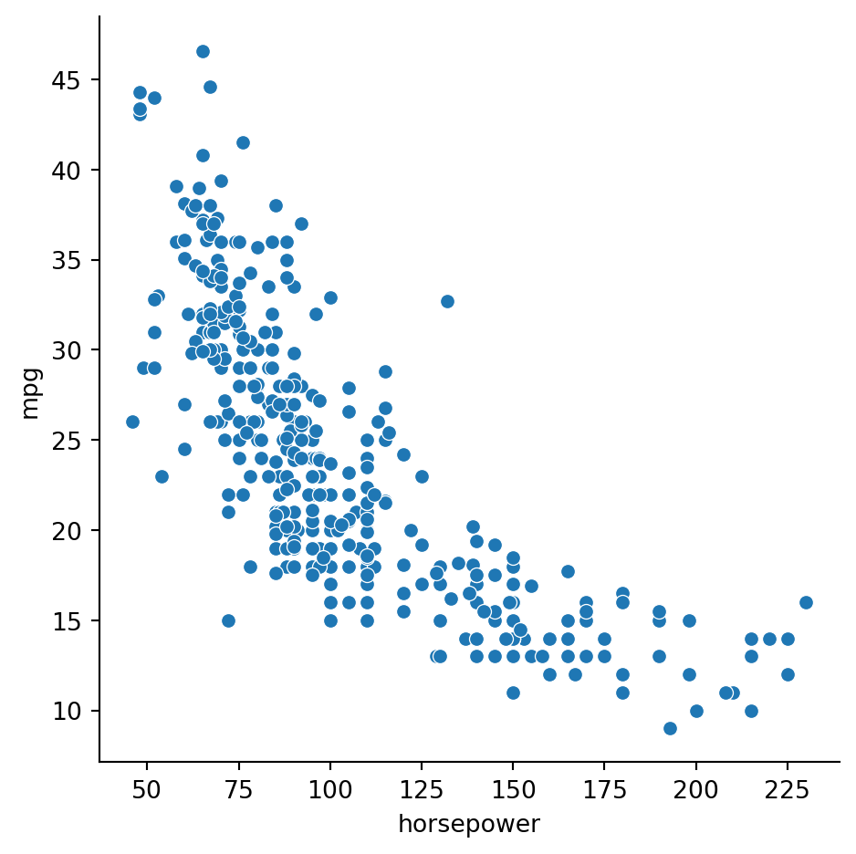

When confronted with a new dataset, it’s crucial to get a sense of its characteristics before attempting to draw conclusions or predictions from it. There are two aspects of this exploration: numerical and graphical. We begin with numbers.
2.1 Summary statistics
The idea of descriptive statistics is to reduce a large collection of numerical values to a much smaller one, or even a single number, that captures essential features. You have probably encountered at least a few of these statistics before. In many cases, the statistical results connect to mathematical theory that makes it possible to reason abstractly about the data.
Example 2.1 Here a classic dataset about flowers:
import pandas as pdiris = pd.read_csv('https://raw.githubusercontent.com/mwaskom/seaborn-data/master/iris.csv')iris.info()
The describe method of a data frame gives a bunch of summary statistics for each column of quantitative data:
iris.describe()
sepal_length
sepal_width
petal_length
petal_width
count
150.000000
150.000000
150.000000
150.000000
mean
5.843333
3.057333
3.758000
1.199333
std
0.828066
0.435866
1.765298
0.762238
min
4.300000
2.000000
1.000000
0.100000
25%
5.100000
2.800000
1.600000
0.300000
50%
5.800000
3.000000
4.350000
1.300000
75%
6.400000
3.300000
5.100000
1.800000
max
7.900000
4.400000
6.900000
2.500000
We now discuss the definitions and interpretations of the values prodcued by describe.
2.1.1 Mean and dispersion
Here are the Big Three of summary statistics: mean, variance, and standard deviation.
Definition 2.1 Given data values \(x_1,\ldots,x_n\), their mean is \[
\mu = \frac{1}{n}\sum_{i=1}^n x_i,
\tag{2.1}\]
their variance is \[
\sigma^2 = \frac{1}{n}\sum_{i=1}^n (x_i - \mu)^2,
\tag{2.2}\]
and their standard deviation (STD) is \(\sigma\), the square root of the variance.
Mean is a measurement of central tendency. Variance and STD are measures of spread or dispersion in the data.
Example 2.2 Suppose that \(x_1=0\), \(x_2=t\), and \(x_3=-t\), where \(|t| \le 6\). What are the minimum and maximum possible values of the standard deviation?
Solution. The mean is \(\mu=0\), hence \[
\sigma^2 = \frac{1}{3}\left[ 0^2 + t^2 + (-t)^2 \right] = \frac{2}{3} t^2.
\] From this we conclude \[
\sigma = \sqrt{\tfrac{2}{3}} |t|.
\] Given that \(0 \le |t| \le 6\), we see that the minimum value of \(\sigma\) is 0 and the maximum is \(2\sqrt{6}\).
Note
Variance is in units that are the square of the data, which can be hard to interpret. But it has other characteristics that are useful mathematically.
2.1.2 Populations and samples
In statistics one refers to the population as the entire universe of available values. Thus, the ages of adults on Earth at some instant has a particular population mean and standard deviation. However, we can usually only measure a sample of the population directly, and we use the sample mean and standard deviation as estimates of the population values.
The definitions in Definition 2.1 are for populations. When they are used on a sample rather than a population, we change the notation a bit as a reminder.
Definition 2.2 Given a sample of data values \(x_1,\ldots,x_n\), the sample mean is
and the sample variance is \[
s_n^2 = \frac{1}{n}\sum_{i=1}^n (x_i - \bar{x})^2.
\]
It can be proved that the sample mean is an accurate way to estimate the population mean, in the following precise sense. If, in a thought experiment, we could average \(\bar{x}\) over all possible samples of size \(n\), the result would be exactly the population mean \(\mu\). That is, we say that \(\bar{x}\) is an unbiased estimator for \(\mu\).
The situation with sample variance is more subtle. If \(s_n^2\) is averaged over all possible sample sets, we do not get the population variance \(\sigma^2\); hence, \(s_n^2\) is called a biased estimator of the population variance. This can be proved by a calculation we won’t go into here, but the essential issue is that the sample mean used in \(s_n^2\) is itself only an estimate of the population mean. A minor adjustment fixes that issue.
Theorem 2.1 An unbiased estimator for \(\sigma^2\) is
Sources are not always uniform using this terminology. Some use sample variance to mean \(s_{n-1}^2\), not \(s_n^2\), and many even omit the subscripts. You should check any source to understand its conventions.
Example 2.3 The values [1, 4, 9, 16, 25] have mean \(\bar{x}=55/5 = 11\). The sample variance is
By contrast, the unbiased estimate of population variance from this sample is
\[
s_{n-1}^2 = \frac{374}{4} = 93.5.
\]
As you can see from the formulas and in Example 2.3, \(s_n^2\) is always an overestimate of the variance. However, the difference becomes negligible as the sample size \(n\) increases, and in any practical dataset the distinction is basically academic.
Caution
NumPy computes the biased estimator of variance by default, while pandas computes the unbiased version. Whee!
For standard deviation, neither\(s_n\)nor\(s_{n-1}\) is an unbiased estimator of \(\sigma\), and there is no simple fix. Again, though, it’s not usually something we worry about in practice.
Example 2.4 While the describe method computes all the summary statistics, you can also obtain them individually using the mean, var, and std methods:
import numpy as npiris.select_dtypes(np.number).mean()
Equation 2.5 requires the population statistics \(\mu\) and \(\sigma\). If sample estimates are used, the results are technically called t-scores in classical statistics, but this distinction is generally ignored for large datasets in practice.
In physical terms, z-scores are dimensionless, i.e., not dependent on the physical units chosen to express the data. The following characteristics are important:
Theorem 2.2 The z-scores have mean equal to zero and variance equal to 1.
Proof. Using the definition Equation 2.5, we calculate the mean of the z-scores as
A longer but similar direct calculation shows that the variance is 1.
Example 2.5 Continuing with the values from Example 2.2, we assume without losing generality that \(t\ge 0\). (Otherwise, we can just swap \(x_2\) and \(x_3\).) Then we have the z-scores \[
z_1 = \frac{0-0}{2t\sqrt{6}} = 0, \quad z_2 = \frac{t-0}{2t\sqrt{6}} = \frac{1}{2\sqrt{6}} \quad z_3 = \frac{-t-0}{2t\sqrt{6}} = \frac{-1}{2\sqrt{6}}.
\]
These are independent of \(t\), which just scales the original values.
Example 2.6 We can write a little function to compute z-scores in Python:
Since floating-point values are rounded off, it’s unlikely that a value derived from them that is meant to be zero will actually be exactly zero. Above, the mean value of about \(-10^{-15}\) should be seen as reasonable for values that have been rounded off in the 15th digit or so.
2.1.4 Median and quantiles
Mean and variance are not the most relevant summary statistics for every dataset. There are important alternatives.
Definition 2.4 For any \(0 < p < 1\), the \(100p\)-percentile or quantile is the value of \(x\) such that \(p\) is the probability of observing a population value less than or equal to \(x\).
The 50th percentile is known as the median of the population.
Note
Some sources reserve the term quantile for another meaning, but since pandas offers quantile to compute percentiles, we don’t draw a distinction.
The unbiased sample median of \(x_1,\ldots,x_n\) can be computed by sorting the values into \(y_1,\ldots,y_n\). If \(n\) is odd, then \(y_{(n+1)/2}\) is the sample median; otherwise, the average of \(y_{n/2}\) and \(y_{1+(n/2)}\) is the sample median.
Example 2.7 For the sorted sample values \(1,3,3,4,5,5,5\), we have \(n=7\) and the sample median is \(4\).
If the sample values are \(1,3,3,4,5,5,5,9\), then \(n=8\) and the sample median is \((4+5)/2=4.5\).
Example 2.8 Here we find the 90th quantile (percentile) of the loan_amnt variable in the loans dataset:
Equivalently, 90 percent of the values are no greater than that value:
sum(x <= pct90) /len(x)
0.9008233250245486
The 50th percentile is the same thing as the median:
print(x.median())print(x.quantile(0.50))
10000.0
10000.0
The median is a measure of central tendency that can substitute for the mean. To calculate an alternative to the standard deviation, we can use two other quantiles.
Definition 2.5 The 25th, 50th, and 75th percentiles are the called first, second, and third quartiles of the distribution. The interquartile range (IQR) is the difference between the 75th percentile and the 25th percentile.
For some samples, the median and IQR might be a good substitute for the mean and standard deviation.
Example 2.9 The dataframe describe method includes mean, standard deviation, and the quartiles:
loans.describe()
Unnamed: 0
loan_amnt
funded_amnt
int_rate
annual_inc
total_pymnt
count
39717.000000
39717.000000
39717.000000
39717.000000
3.971700e+04
39717.000000
mean
19858.000000
11219.443815
10947.713196
12.021177
6.896893e+04
12153.596544
std
11465.454657
7456.670694
7187.238670
3.724825
6.379377e+04
9042.040766
min
0.000000
500.000000
500.000000
5.420000
4.000000e+03
0.000000
25%
9929.000000
5500.000000
5400.000000
9.250000
4.040400e+04
5576.930000
50%
19858.000000
10000.000000
9600.000000
11.860000
5.900000e+04
9899.640319
75%
29787.000000
15000.000000
15000.000000
14.590000
8.230000e+04
16534.433040
max
39716.000000
35000.000000
35000.000000
24.590000
6.000000e+06
58563.679930
It’s easy to write a function that computes and returns the IQR of a series:
Mean and STD, or median and IQR, attempt to summarize quantitative data with a couple of numbers. At the other extreme, we can express the distribution values more precisely using functions and graphical tools.
Python has many graphics packages with different niches. The most widespread is Matplotlib, for which you must explicitly specify most aspects of how the plots will look.
We will instead use seaborn, which is built on top of Matplotlib. It’s built around a declarative style, meaning that you describe what you want to see and seaborn makes the decisions about how it looks. Most of the time, the decisions it makes are just fine. To use seaborn, you import it:
import seaborn as sns
There are three major commands that you call in seaborn:
displot
How values of a single variable are distributed.
catplot
How categorical values are distributed within and across categories.
relplot
How values of two variables are related to each other.
These three commands then call other functions to create the actual plots. (You can call those directly yourself, but then you will be missing a lot of automated setup and formatting that seaborn provides.)
2.2.1 Histograms
By definition, we know that if \(a<b\), \(\hat{F}(b) - \hat{F}(a)\) is the number of observations in the half-open interval \((a,b]\). This leads into the next definition.
Definition 2.6 Select the ordered values \(t_1 < t_2 < \cdots < t_m\), called edges, and define bins as the intervals \[
B_k = (t_k,t_{k+1}], \qquad k=0,\ldots,m,
\]
where we adopt the convention that \(t_0=-\infty\) and \(t_{m+1}=\infty\). Let \(c_k\) be the number of data values in \(B_k\). Then a histogram relative to the bins is the list of \((B_0,c_0),\ldots,(B_m,c_m)\).
Seaborn uses displot to show empirical distributions, and the default is to show a histogram.
Example 2.10 Here is a histogram from the penguins dataset:
Given a sample of a population, we can characterize it using an important function defined by the data.
Definition 2.7 The empirical cumulative distribution function or ECDF of a sample is the function \(\hat{F}(t)\) whose value at \(t\) equals the proportion of the sample values that are less than or equal to \(t\).
Note that the value of \(\hat{F}\) ranges between 0 and 1 (inclusive) and is a nondecreasing function of \(t\).
Since the smallest value is at 1/4, we have \(F(t)=0\) when \(t < 1/4\). At \(t=1/4\) we have passed 1 of the 4 values, so \(F(1/4)=1/4\). This value of \(F\) remains constant until we get to \(t=1/2\), at which point it jumps to the value \(1/2\), and so on, leading to the graph in Figure 2.1
It’s a stairstep plot, because the ECDF jumps at each data value.
There is a simple relationship between the ECDF \(\hat{F}\) and histograms. If there are \(n\) total observations in the sample and \(c_k\) is the count in bin \((t_k,t_{k+1}]\), then
Paradoxically, sometimes infinity makes things easier. For instance, a Riemann sum is a long, complicated expression, but in the limit of infinitely many rectangles, it becomes a simple definite integral. Something similar happens when we think about populations so large that they can be considered infinite.
2.3.1 CDF
Example 2.13 It’s natural and easy to generalize Example 2.11 to samples of any size \(n\): \(x_i=i/n\) for \(i=1,\ldots,n\). Intuitively you cam see that as \(n\) increases, the stairs in the plots in Figure 2.1 and Figure 2.2 become narrower and shallower, eventually becoming a smooth ramp:
Figure 2.3: CDF for an infinite population.
The formal expression of the function plotted in Figure 2.3 is
\[
F(t) = \begin{cases}
0, & t < 0, \\
t,& 0 \le t \le 1, \\
1,& t > 1.
\end{cases}
\tag{2.7}\]
Conceptually, this function represents a distribution in which every value between 0 and 1 is equally likely. This is known as the uniform distribution over the interval \([0,1]\).
We now define the continuous counterpart of the ECDF.
Definition 2.8 The cumulative distribution function (CDF) of a distribution is the function \[
F(t) = \text{probability that a randomly chosen value is $\le t$},
\]
where \(t\) is any real number.
For a finite population, the CDF and the ECDF are the same.
Example 2.14 Here are maximum daily temperatures (in tenths of Celsius degrees) for Newark, DE, starting in 1894:
More than 29,000 observations are summarized in this ECDF. There are still small steps visible in the graph above because the temperature values are discrete. Even so, there would be little changed by approximating the distribution with a smooth one.
Conceptually we may interpret a large sample as an approximation to an infinite population. In this case, the ECDF is an approximation to the CDF.
2.3.2 PDF
In Equation 2.6 we connected a histogram to the ECDF via \({c_k} = n[\hat{F}(t_{k+1}) - \hat{F}(t_k)]\), where \(c_k\) is the count in bin \((t_k,t_{k+1}]\). If we let \(p_k = c_k/n\) be the fraction of observations in that bin, then we can write
We can interpret the left-hand side of Equation 2.8 as the density of observations in the bin. If we take the limit \(t_{k+1} \to t_k\), we get a derivative on the right-hand side, which motivates the following definition.
Definition 2.9 The probability density function or PDF of a distribution, denoted \(f(t)\), is the derivative of the CDF, i.e.,
\[
f(t) = F'(t).
\tag{2.9}\]
The intuitive interpretation of \(f(t)\) is as the probability of observing a value in a tiny interval around \(t\).
Example 2.15 The histogram of the temperature distribution in Example 2.14 is an approximation to the continuous PDF, if we normalize the counts properly:
There is an algorithm known as kernel density estimation (KDE) that can be used to estimate the true PDF from a sample. It’s another option in the displot function:
sns.displot(weather, x="TMIN", kind="kde");
Example 2.16 For a uniform distribution over \([0,1]\), we can take the derivative of the CDF in Equation 2.7 to get
\[
F'(t) = \begin{cases}
0, & t < 0, \\
1, & 0 < t < 1, \\
0, & t > 1.
\end{cases}
\tag{2.10}\]
We’re sweeping some details under the rug here, because \(F\) is not differentiable at \(t=0\) and \(t=1\). It turns out that we can mostly ignore such points in practice.
The Fundamental Theorem of Calculus and Equation 2.9 imply that the CDF is the integral of the PDF. Specifically, for any value of \(a\),
\[
F(t) = F(a) + \int_{a}^t f(s) \, ds.
\tag{2.11}\]
2.3.3 Random numbers in Python
Generating truly random numbers on a computer is not simple. We rely on pseudorandom numbers, which are generated by deterministic functions called random number generators (RNGs) that have extremely long periods. One consequence is repeatability: by specifying the starting state of the RNG, you can get exactly the same pseudorandom sequence every time.
Caution
There is an older way to use random numbers in NumPy than the one presented here. You’ll still find it on the web and in some books, but the newer way is recommended.
Example 2.17 We start by creating an RNG with a specific state. Every time this code is run, the same sequence of numbers will be generated from it.
from numpy.random import default_rngrng = default_rng(19716) # setting an initial state
The uniform generator method produces numbers distributed uniformly between two limits you specify.
The standard normal distribution uses \(\mu=0\) and \(\sigma=1\).
For data that are distributed normally, about 68% of the values lie within one standard deviation of the mean, and 95% lie within two standard deviations. Note however that all real values of \(t\) are theoretically possible.
One appealing fact about the normal distribution is that the effects of scaling and shifting the variable are simple:
Theorem 2.3 If the variable \(s\) has a standard normal distribution, then the variable \(t = \sigma s + \mu\) has a normal distribution with mean \(\mu\) and variance \(\sigma^2\).
Example 2.18 The normal method of a NumPy RNG simulates a standard normal distribution.
A KDE plot shows us a result close to the classic bell curve:
sns.displot(data=df, x="3x-10", kind="kde");
2.4 Grouping data
It’s often useful to analyze data in groups defined by one or more columns. Grouping data is tied to the idea of conditional probability.
Example 2.19 This is a dataset about the fuel efficiency of some cars:
cars = sns.load_dataset("mpg")cars.head()
mpg
cylinders
displacement
horsepower
weight
acceleration
model_year
origin
name
0
18.0
8
307.0
130.0
3504
12.0
70
usa
chevrolet chevelle malibu
1
15.0
8
350.0
165.0
3693
11.5
70
usa
buick skylark 320
2
18.0
8
318.0
150.0
3436
11.0
70
usa
plymouth satellite
3
16.0
8
304.0
150.0
3433
12.0
70
usa
amc rebel sst
4
17.0
8
302.0
140.0
3449
10.5
70
usa
ford torino
Here’s the distribution of the mpg variable in cars over the entire dataset:
sns.displot(data=cars, x="mpg", bins=20);
Here is the probability that a randomly chosen car has mpg less than 20:
(cars["mpg"] <20).mean()
0.3793969849246231
Now, note that one of the columns of the dataset indicates the place of manufacture:
cars["origin"].value_counts()
origin
usa 249
japan 79
europe 70
Name: count, dtype: int64
Intuitively, it seems likely that the distribution of mpg will differ for different countries of origin. For example, if we narrow our focus to cars made in the U.S.A., we get a very different result for the probability of mpg less than 20:
There is no need to pattern your code after this example, as we will see more convenient ways to do this sort of computation in Section 2.4.2.
2.4.1 Facet, box, and violin plots
In a facet plot, a distribution plot is repeated across columns or rows for each group, making it easy to compare the groups visually.
Important
In these examples we sometimes use height or width keywords to specify the size of the plots (in inches) for this output format. You should start without them and use them only as needed.
Example 2.20 A facet plot allows us to easily group data by a categorical variable. In this case, we select the origin column using the col keyword:
Each colored box shows the interquartile range, with the interior horizontal line showing the median. The whiskers and dots are explained in a later section. A related visualization is a violin plot:
In a violin plot, the inner lines show the same information as the box plot, with the thick part showing the IQR, while the sides of the “violins†are KDE estimates of the density functions.
2.4.2 Grouped operations in pandas
In pandas, the groupby method splits a data frame into groups based on values in a designated (categorical) column. By itself, this method doesn’t accomplish much, but it’s a prelude to operating in a groupwise (i.e., conditional) manner.
2.4.2.1 Aggregation
When you want to compute a summary statistic for each group, you need an aggregator. A list of the most common predefined aggregation functions is given in Table 2.1.
Table 2.1: Aggregation functions. All ignore NaN values.
method
effect
count
Number of values in each group
mean
Mean value in each group
sum
Sum within each group
std, var
Standard deviation/variance within groups
min, max
Min or max within groups
describe
Descriptive statistics
first, last
First or last of group values
Example 2.22 Here is how we can define groups based on the categorical origin column:
cars.groupby("origin")
<pandas.core.groupby.generic.DataFrameGroupBy object at 0x12f693380>
As you can see from the output above, a grouped data frame isn’t of much value on its own. But let’s use it to find the groupwise mean of each quantitative column in the frame:
cars.groupby("origin").mean(numeric_only=True)
mpg
cylinders
displacement
horsepower
weight
acceleration
model_year
origin
europe
27.891429
4.157143
109.142857
80.558824
2423.300000
16.787143
75.814286
japan
30.450633
4.101266
102.708861
79.835443
2221.227848
16.172152
77.443038
usa
20.083534
6.248996
245.901606
119.048980
3361.931727
15.033735
75.610442
Multiply dotted commands are common in pandas. You need to parse them from left to right. The first command above groups the data frame, and the second computes the mean within each group.
If we want to focus on just mpg from the dataset, we can extract that column after the grouping but before operating on the groups:
cars.groupby("origin")["mpg"].mean()
origin
europe 27.891429
japan 30.450633
usa 20.083534
Name: mpg, dtype: float64
To help interpret this expression, we could break it into equivalent separate steps:
origin
europe 27.891429
japan 30.450633
usa 20.083534
Name: mpg, dtype: float64
However, the one-liner is considered better style most of the time.
If you want an aggregator other than those in Table 2.1, you can call agg with your own function. Here are the conditional probabilities of mpg being less than 20 for all values of origin:
Above, each of the conditional distributions was shifted and scaled identically. But we might instead, want to standardize within groups separately, with each group using its own mean and standard deviation:
Now, each group distribution is centered at 0 and has a standard deviation of 1.
2.4.3 Grouping by a quantitative variable
Grouping is easiest to think about as being conditioned on a categorical variable. But it can also be done on a quantitative variable by first binning it into intervals using pd.cut.
Example 2.24 Suppose we want to group cars by horsepower, which is quantitative. We can use pd.cut to create bins of width 40:
Informally, an outlier is a data value that is considered to be far from typical. In some applications, such as detecting earthquakes or cancer, outliers are the cases of real interest. But here we will treat them as unwelcome values that might result from equipment failure, confounding effects, mistyping a value, using an artificial extreme value to represent missing data, and so on. In such cases we want to minimize the effect of the outliers on the statistics.
It is well known, for instance, that the mean is more sensitive to outliers than the median is.
Example 2.25 The values \(1,2,3,4,5\) have a mean and median both equal to 3. If we change the largest value to be a lot larger, say \(1,2,3,4,1000\), then the mean changes to 202. But the median is still 3!
If you want to use a statistic like the mean that is vulnerable to outliers, it’s typical to remove such values early on. There are various ways of deciding what qualifies as an outlier, with no one-size recommendation for all applications.
2.5.1 IQR
Let \(Q_{25}\) and \(Q_{75}\) be the first and third quartiles (i.e., 25% and 75% percentiles), and let \(I=Q_{75}-Q_{25}\) be the interquartile range (IQR). Then \(x\) is an outlier value if
\[
x < Q_{25} - 1.5I \text{ or } x > Q_{75} + 1.5I.
\tag{2.13}\]
In a box plot, the whiskers growing from a box show the extent of the non-outlier data, and the dots beyond the whiskers represent outliers.
Example 2.26 Let’s look at another data set, based on a functional MRI experiment:
fmri = sns.load_dataset("fmri")fmri.head()
subject
timepoint
event
region
signal
0
s13
18
stim
parietal
-0.017552
1
s5
14
stim
parietal
-0.080883
2
s12
18
stim
parietal
-0.081033
3
s11
18
stim
parietal
-0.046134
4
s10
18
stim
parietal
-0.037970
We want to focus on the signal column, splitting according to the event.
The dots lying outside the whiskers in the plot can be considered outliers satisfying one of the inequalities in Equation 2.13.
Let’s now remove the outliers. We start with a function that computes a Boolean-valued series for a given input. This function is applied as a transform to the data as grouped by events:
print( "means with outliers:" )print( by_event["signal"].mean() )print( "\nmeans without outliers:" )print( cleaned.groupby("event")["signal"].mean() )
means with outliers:
event
cue -0.006669
stim 0.013748
Name: signal, dtype: float64
means without outliers:
event
cue -0.008243
stim -0.010245
Name: signal, dtype: float64
For the stim case in particular, the mean value changes by almost 200%, including a sign change. (Relative to the standard deviation, it’s closer to a 20% change.)
2.5.2 Mean and STD
In normal distributions, values more than twice the standard deviation \(\sigma\) from the mean could be considered to be outliers; this would exclude 5% of the values, on average. A less aggressive criterion is to allow a distance of \(3\sigma\), which excludes only about 0.3% of the values. The IQR criterion above corresponds to about \(2.7\sigma\) in the normal distribution case.
Note
A criticism of classical statistics is that much of it is conditioned on the assumption of normal distributions. This assumption is often violated by real datasets; quantities that depend on normality should be used judiciously.
Example 2.27 The following plot shows the outlier cutoffs for 2000 samples from a normal distribution, using the criteria for 2σ (red), 3σ (blue), and 1.5 IQR (black).
Code
import matplotlib.pyplot as pltfrom numpy.random import default_rngrandn = default_rng(1).normal x = pd.Series(randn(size=2000))sns.displot(data=x,bins=30);m,s = x.mean(),x.std()plt.axvline(m-2*s,color='r')plt.axvline(m+2*s,color='r')plt.axvline(m-3*s,color='b')plt.axvline(m+3*s,color='b')q1,q3 = x.quantile([.25,.75])plt.axvline(q3+1.5*(q3-q1),color='k')plt.axvline(q1-1.5*(q3-q1),color='k');
For asymmetric distributions, or those with a heavy tail, these criteria might show greater differences.
2.6 Correlation
There are often variables that we believe to be linked, either because one influences the other, or because both are influenced by some other factor. There are numerous ways to measure the extent of the relationship between variables. But it’s good practice to plot the data before jumping into the numbers.
2.6.1 Relational plots
Thus far, we have used displot, or “distribution plot”, to make histograms, and catplot, or “categorical plot”, to make box and violin plots. The third major plot type in seaborn is relplot, or “relational plot”, to show the relationships between variables.
Example 2.28 By default, relplot makes a scatter plot of two different variables:
sns.relplot(data=cars, x="model_year", y="mpg");
Like in the other plot types, we can use hue (color) and marker size to indicate groups within the data:
The panels along the diagonal show each quantitative variable’s PDF. The other panels show scatter plots putting one pair at a time of the variables on the coordinate axes.
2.6.2 Correlation
Definition 2.11 Suppose we have two series of observations, \([x_i]\) and \([y_i]\), representing observations of random quantities \(X\) and \(Y\) having means \(\mu_X\) and \(\mu_Y\). Their covariance is defined as \[
\Cov(X,Y) = \frac{1}{n} \sum_{i=1}^n (x_i-\mu_X)(y_i-\mu_Y).
\]
Note that the values \(x_i-\mu_X\) and \(y_i-\mu_Y\) are deviations from the means.
Covariance is not easy to interpret. Its units are the products of the units of the two variables, and it is sensitive to rescaling the variables (e.g., grams versus kilograms).
We can remove the dependence on units and scale by applying the covariance to standardized scores for both variables, resulting in a measure called correlation. The following is the best-known measure of correlation.
Definition 2.12 For the populations of \(X\) and \(Y\), the Pearson correlation coefficient is \[
\begin{split}
\rho(X,Y) &= \frac{1}{n} \sum_{i=1}^n \left(\frac{x_i-\mu_X}{\sigma_X}\right)\left(\frac{y_i-\mu_Y}{\sigma_Y}\right) \\
& = \frac{\Cov(X,Y)}{\sigma_X\sigma_Y},
\end{split}
\tag{2.14}\]
where \(\sigma_X^2\) and \(\sigma_Y^2\) are the population variances of \(X\) and \(Y\).
For samples from the two populations, we use \[
r_{xy} = \frac{\sum_{i=1}^n (x_i-\bar{x}) (y_i-\bar{y})}{\sqrt{\sum_{i=1}^n (x_i-\bar{x})^2}\,\sqrt{\sum_{i=1}^n (y_i-\bar{y})^2}},
\tag{2.15}\]
where \(\bar{x}\) and \(\bar{y}\) are sample means.
Both \(\rho_{XY}\) and \(r_{xy}\) are between \(-1\) and \(1\), with the endpoints indicating perfect correlation (inverse or direct).
An equivalent formula for the sampled case \(r_{xy}\) is \[
r_{xy} = \frac{1}{n-1} \sum_{i=1}^n \left(\frac{x_i-\bar{x}}{s_x}\right)\, \left(\frac{y_i-\bar{y}}{s_y}\right),
\tag{2.16}\]
where \(s_x^2\) and \(s_y^2\) are the (unbiased) sample variances of \(X\) and \(Y\).
Example 2.29 We might reasonably expect horsepower and miles per gallon to be negatively correlated:
sns.relplot(data=cars, x="horsepower", y="mpg");

Covariance allows us to quantify the relationship:
cars[ ["horsepower", "mpg"] ].cov()
horsepower
mpg
horsepower
1481.569393
-233.857926
mpg
-233.857926
61.089611
But should these numbers considered big? The Pearson coefficient is more easily interpreted:
cars[ ["horsepower", "mpg"] ].corr()
horsepower
mpg
horsepower
1.000000
-0.778427
mpg
-0.778427
1.000000
The value of about \(-0.79\) suggests that knowing one of the values would allow us to predict the other one rather well using a best-fit straight line (more on that in a future chapter).
When you want to see correlations among many variables, the numbers can be overwhelming to look at:
cars.corr(numeric_only=True)
mpg
cylinders
displacement
horsepower
weight
acceleration
model_year
mpg_z
group_mpg_z
mpg
1.000000
-0.775396
-0.804203
-0.778427
-0.831741
0.420289
0.579267
1.000000
0.816412
cylinders
-0.775396
1.000000
0.950721
0.842983
0.896017
-0.505419
-0.348746
-0.775396
-0.527214
displacement
-0.804203
0.950721
1.000000
0.897257
0.932824
-0.543684
-0.370164
-0.804203
-0.528723
horsepower
-0.778427
0.842983
0.897257
1.000000
0.864538
-0.689196
-0.416361
-0.778427
-0.609533
weight
-0.831741
0.896017
0.932824
0.864538
1.000000
-0.417457
-0.306564
-0.831741
-0.592236
acceleration
0.420289
-0.505419
-0.543684
-0.689196
-0.417457
1.000000
0.288137
0.420289
0.348266
model_year
0.579267
-0.348746
-0.370164
-0.416361
-0.306564
0.288137
1.000000
0.579267
0.596192
mpg_z
1.000000
-0.775396
-0.804203
-0.778427
-0.831741
0.420289
0.579267
1.000000
0.816412
group_mpg_z
0.816412
-0.527214
-0.528723
-0.609533
-0.592236
0.348266
0.596192
0.816412
1.000000
It’s often helpful to visualize correlations using a heatmap:
# use vmin and vmax to set the extreme values of the color scalesns.heatmap(cars.corr(numeric_only=True), annot=True, cmap="coolwarm", vmin=-1, vmax=1);
As is usual when dealing with means, the Pearson coefficient can be sensitive to outlier values.
Example 2.30 The Pearson coefficient of any variable with itself is 1:
x = pd.Series( range(10) )x.corr(x)
0.9999999999999999
Now let’s correlate x with a series that differs in only one element, but by a lot:
y = x.copy()y[4] =-1000x.corr(y)
0.06752159131392785
The Pearson coefficient is overwhelmed by the extreme outlier.
2.6.3 Spearman coefficient
The Spearman coefficient is one way to lessen the impact of outliers when measuring correlation. The idea is that only the orderings of the values are used, not their magnitudes.
Definition 2.13 If \(x_1,\ldots,x_n\) is a series of observations, let their sorted ordering be \[
x_{s_1},x_{s_2},\ldots,x_{s_n}.
\]
Then \(s_1,s_2,\ldots,s_n\) is the rank series of \(\bfx\).
Definition 2.14 The Spearman coefficient of two series of equal length is the Pearson coefficient of their rank series.
Example 2.31 Continuing with Example 2.30, we can use argsort to find the rank series:
The Pearson coefficient of the ranks is the Spearman coefficient of the original x and y series:
ranks.corr()
x
y
x
1.000000
0.878788
y
0.878788
1.000000
Recall that x and y differ only in one element. The Spearman coefficient between them remains fairly close to one. Note that we don’t actually have to find the rank series manually:
x.corr(y, "spearman")
0.8787878787878788
As long as y[4] is negative, so that its rank is zero, it doesn’t matter what its particular value is:
y[4] =-1000000x.corr(y,"spearman")
0.8787878787878788
(different data, same idea)
The robustness of the Spearman coefficient makes in an interesting alternative to the Pearson coefficient when dealing with datasets that have outliers.
2.6.4 Categorical correlation
An ordinal variable, such as the days of the week, is often straightforward to quantify as integers. But a nominal variable poses a different challenge.
Example 2.32 Grouped histograms suggest an association between country of origin and MPG:
Attaching theorem-supported numbers to real data feels precise and infallible. The theorems do what they say, of course—they’re theorems!—but our intuition can be a little too ready to attach significance to the numbers, causing misconceptions or mistakes. Proper visualizations can help us navigate these waters safely.
2.7.1 The Datasaurus
The Datasaurus Dozen is a collection of datasets that highlights the perils of putting blind trust into summary statistics.
Example 2.33 The Datasaurus is a set of 142 points making a handsome portrait:
In casual speech, you might expect two variables that are uncorrelated to be unrelated. But that is not at all how the mathematical definitions play out.
Example 2.34 For example, here are \(x\) and \(y\) variables that both depend on a hidden variable \(\theta\):
Neither informally nor mathematically would we say that \(x\) and \(y\) are independent! For example, if \(y=0\), then there is only one possible value for \(x\). Yet the correlation between \(x\) and \(y\) is zero:
x.corr(y)
8.276095507101827e-18
Correlation can only measure the extent of the relationship that is linear; \(x\) and \(y\) lying on a straight line means perfect correlation. In this case, every line you can draw that passes through \((0,0)\) is essentially equally bad at representing the data, and correlation cannot express the relationship.
2.7.3 Simpson’s paradox
The penguin dataset contains a common paradox—or a counterintuitive phenomenon, at least.
Example 2.35 Two of the variables show a fairly strong negative correlation:
Within each color, the positive association is clear. But what dominates the combination of all three species is the large difference between Gentoo and the others. Because the Gentoo are both larger and have shallower bills, the dominant relationship is negative.
As often happens in statistics, the precise framing of the question can strongly affect its answer. This can lead to honest mistakes by the naive as well as outright deception by the unscrupulous.
Exercises
For these exercises, you may use computer help to work on a problem, but your submitted solution should be self-contained without reference to computer output (unless stated otherwise).
Exercise 2.1 (2.1) The following parts are about the sample set of \(n\) values (\(n>2\))
\[
0, 0, 0, \ldots, 0, 1000.
\]
(That is, there are \(n-1\) copies of 0 and one copy of 1000.)
(a) Show that the sample mean is \(1000/n\).
(b) Find the sample median when \(n\) is odd.
(c) Show that the corrected sample variance \(s_{n-1}^2\) is \(10^6/n\).
(d) Find the sample z-scores of all the values.
Exercise 2.2 (2.1) Suppose given samples \(x_1,\ldots,x_n\) have the sample z-scores \(z_1,\ldots,z_n\).
(a) Show that \(\displaystyle \sum_{i=1}^n z_i = 0.\) (Start by substituting the definition of \(z_i\), using a new index variable \(j\) for that sum.)
(b) Show that \(\displaystyle \sum_{i=1}^n z_i^2 = n-1.\)
Exercise 2.3 (2.1) Define 8 points on an ellipse by \(x_k=a\cos(\theta_k)\) and \(y_k=b\sin(\theta_k)\), where \(a\) and \(b\) are positive and \[
\theta_1= \frac{\pi}{4}, \theta_2 = \frac{\pi}{2}, \theta_3 = \frac{3\pi}{4}, \ldots, \theta_8 = 2\pi.
\] Let \(u_1,\ldots,u_8\) and \(v_1,\ldots,v_8\) be the z-scores of the \(x_k\) and the \(y_k\), respectively. Show that the points \((u_k,v_k)\) all lie on a circle centered at the origin for all \(k=1,\ldots,8\). (By extension, standardizing points into z-scores is sometimes called sphereing them.)
Exercise 2.4 (2.1) Given a population of values \(x_1,x_2,\ldots,x_n\), define the function
\[
r_2(x) = \sum_{i=1}^n (x_i-x)^2.
\]
Show using calculus that \(r_2\) is minimized at \(x=\mu\), the population mean. (The idea is that minimizing \(r_2\) is a way to find the “most representative†value for the dataset.)
Exercise 2.5 (2.1) Suppose that \(n=2k+1\) and a population has values \(x_1,x_2,\ldots,x_{n}\) in sorted order, so that the median is equal to \(x_k\). Define the function
\[
r_1(x) = \sum_{i=1}^n |x_i - x|.
\]
(This function is called the total absolute deviation of \(x\) from the population.) Show that \(r_1\) has a global minimum at \(x=x_k\) by way of the following steps.
(a) Explain why the derivative of \(r_1\) is undefined at every \(x_i\). Consequently, all of the \(x_i\) are critical points of \(r_1\).
(b) Determine \(r_1'\) within each interval \((-\infty,x_1),\, (x_1,x_2),\, (x_2,x_3),\) and so on. Explain why this shows that there cannot be any additional critical points to consider. (Note: you can replace the absolute values with a piecewise definition of \(r_1\), where the formula for the pieces changes as you cross over each \(x_i\).)
(c) By considering the \(r_1'\) values between the \(x_i\), explain why it must be that
Find a formula for its CDF. (Hint: It’s a piecewise formula. First find it for \(t< -1,\) then for \(-1 \le t \le 1,\) and finally for \(t>1\).)
Exercise 2.9 (2.3) What is the median of the normal distribution whose PDF is given by Equation 2.12? The answer is probably intuitively clear, but you should make a mathematical argument (though it does not require difficult calculations). Note: there is no simple antiderivative formula for the PDF, and you do not need it anyway.
Exercise 2.10 (2.5) This exercise is about the same set of sample values as Exercise 2.1. Suppose the 2σ-outlier criterion is applied using the sample mean and sample variance.
(a) Show that regardless of \(n\), the value 0 is never an outlier.
(b) Show that the value 1000 is an outlier if \(n \ge 6\).
Exercise 2.11 (2.5) Define a population by
\[
x_i = \begin{cases}
1, & 1 \le i \le 11, \\
2, & 12 \le i \le 14,\\
4, & 15 \le i \le 22, \\
6, & 23 \le i \le 32.
\end{cases}
\]
(That is, there are 11 values of 1, 3 values of 2, 8 values of 4, and 10 values of 6.)
(a) Find the median of the population.
(b) Find the smallest interval containing all non-outlier values according to the 1.5 IQR criterion.
Exercise 2.12 (2.6) Prove that two sample sets have a Pearson correlation coefficient equal to 1 if they have identical z-scores. (Hint: Use the results of Exercise 2.2.)
Exercise 2.13 (2.6) Suppose that two sample sets satisfy \(y_i=-x_i\) for all \(i\). Prove that the Pearson correlation coefficient between the sets equals \(-1\).


{kind=link}
{kind=link}
{kind=link}
{kind=link}
{kind=link}